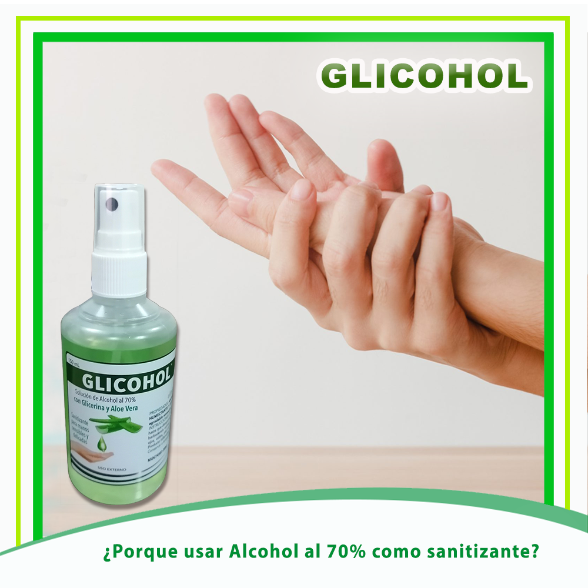

Actualidad
IFARBORANGE quiere que tus hijos saquen provecho a sus clases virtuales, por eso te damos 9 importantes consejos para que los puedas ayudar.
Leer mas...
- Programa un horario (y haz que se cumpla). Elabora un cronograma para que los chicos estudien y hagan las tareas asignadas, otorgándoles también un recreo.
- Crea un espacio confortable, iluminado y agradable para trabajar. Un área de la casa ventilada y con luz natural, donde no haya demasiado ruido ni distracciones.
- Sigue la rutina normal. Asegúrate que los niños sigan los mismos horarios cotidianos que cuando tenían clases presenciales como la hora de levantarse, por ejemplo.
- Toma el control. Impón las reglas y asegúrate que se cumplan. No dejes que el niño haga lo que quiera ni lo amenaces con cosas que luego no cumplirás.
- Programa un tiempo para esparcimiento. Asegúrate que los chicos realicen en algún momento del día actividades físicas.
- Asegúrate que se hidraten y coman bien. Proporcionales comidas nutritivas y balanceadas, evita el exceso de dulces y postres.
- Enséñales la forma correcta de sentarse. Es importante que aprendan a sentarse bien para evitar problemas de espalda en un futuro.
- Revisa que la señal de internet sea buena. El lugar designado para su clase debe tener buena recepción del internet, muchos equipos conectados podrían bajar la velocidad.
- Prohíbe bebidas a lado del computador. Son niños y es normal que tengan accidentes, que puedan dañar el equipo y su integridad física por eso es mejor alejar los líquidos de sus equipos electrónicos.
IFARBORANGE fortalece las defensas y disminuye el riesgo de infecciones respiratorias, gracias a la Vitamina A, D y C con OMEGA 3 que contiene.
Familias fuertes y sanas con IFARBORANGE.
Un error común al usar alcohol de 96% es creer que, por ser más concentrado, actuará mejor frente a virus y bacterias
Leer mas...
El alcohol al 70% es más efectivo, esto sucede porque los alcoholes tienen la propiedad que mediante el agua logran una mayor penetrabilidad mejorando la penetración en el protoplasma bacteriano además de tener acción fungicida y virucida.
Concentraciones superiores al 70% como al 96% son menos eficaces para bacterias porque la penetración es defectuosa debido a la baja presencia de agua. Este último “es un alcohol más puro, por lo tanto, se evapora rápidamente permaneciendo menos tiempo en la zona de aplicación”.
¿Es mejor usar Alcohol líquido o Alcohol Gel? Para la higiene de manos podemos utilizar Alcohol líquido (Alcohol medicinal o Alcohol simple líquido) o Gel Hidroalcohólico.
Usar Alcohol líquido constantemente puede resecar las manos. “sufrirán el efecto deshidratante que provoca el alcohol”. Ese problema “se verá minimizado si utilizamos un gel, loción o solución hidroalcohólica con agentes emolientes, puesto que este tipo de formulaciones incorporan sustancias que reducen la deshidratación.
El alcohol gel, evita la evaporación rápida, mantiene el alcohol al 70% mayor tiempo en las manos, facilitando así la desinfección de la totalidad de las manos.
IFARBO produce sanitizantes garantizados con certificación BPM (Buenas Prácticas de Manufactura) te sugerimos usar:
GLICOHOL (Alcohol al 70% con Glicerina y Aloe Vera) Sanitizante que protege, humecta y suaviza tus manos.